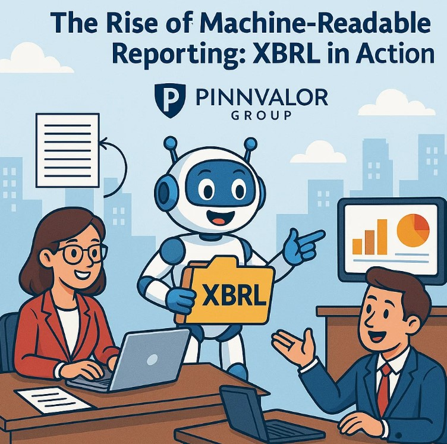

The Rise of Machine-Readable Reporting: XBRL in Action
In a world increasingly driven by data, financial reporting is no longer just about presenting numbers in a neatly formatted PDF. Today’s stakeholders—regulators, investors, analysts, and even AI systems—need information that is not only accurate but also instantly accessible, searchable, and processable. Enter XBRL (eXtensible Business Reporting Language), the game-changer in machine-readable financial reporting.
Can your financial reports speak the language of machines?
The power of XBRL lies in its ability to make data both human and machine-intelligent. It’s not the future of reporting—it’s the present.
What is XBRL?
XBRL is an open international standard for digital business reporting. It allows financial data to be tagged with standardized codes, making the information both machine-readable and easily comparable. Rather than a static PDF or printed document, an XBRL file allows computers to understand the content of financial statements and extract key insights efficiently.
Why the Shift to Machine-Readable Reporting?
Traditional financial reports are static and often unstructured. While human readers can interpret the data visually, machines struggle to extract or analyze it without manual intervention. The demand for automation, transparency, and speed has driven the transition toward structured data formats like XBRL.
Key Drivers:
- Regulatory compliance – Many countries have mandated XBRL for financial disclosures.
- Real-time analysis – Enables faster decision-making by investors and regulators.
- Data comparability – Standardized tagging makes cross-company and cross-sector analysis seamless.
- Error reduction – Automates validations and improves accuracy.
How Does XBRL Work?
XBRL uses tags from a predefined taxonomy to describe each line item in a financial statement. For example, “Revenue” is tagged with a specific code that identifies it as operating income in the taxonomy. This structured format allows software to identify, validate, and analyze data without ambiguity.
Key Components of XBRL:
- Taxonomy: Defines the standard tags for elements like assets, liabilities, income, etc.
- Instance Document: The actual financial data file tagged using the taxonomy.
- Rendering: The visual layout that makes the tagged data human-readable.
Global Adoption of XBRL
Governments and regulatory bodies across the globe have embraced XBRL. For instance:
- SEC (USA): Mandates XBRL filings for public companies since 2009.
- MCA (India): Requires companies to file financial statements in XBRL format.
- ESMA (Europe): Implements XBRL for ESEF (European Single Electronic Format).
This growing adoption signals a unified global direction toward digital financial transparency.
Benefits of XBRL in Action
- Efficiency: Reduces manual data entry, saving time and resources.
- Accuracy: Minimizes human errors through automated validation.
- Transparency: Boosts confidence among investors and regulators.
- Analytics: Facilitates big data analysis, predictive modeling, and AI applications.
Challenges in Implementation
Despite its advantages, implementing XBRL isn't without challenges:
- Learning Curve: Companies need to understand taxonomy and tagging.
- Initial Costs: Software and training can require upfront investment.
- Taxonomy Complexity: Different industries may require customized extensions.
The Future of Financial Reporting
The future of financial reporting lies in smart, structured, and standardized data. XBRL is at the heart of this transformation, enabling seamless integration of financial data into analytical tools, dashboards, and even AI algorithms. As machine learning and automation continue to evolve, the need for machine-readable formats like XBRL will only intensify.
Conclusion: A New Era of Transparency
XBRL isn't just a technical upgrade—it's a fundamental shift in how financial data is shared, understood, and used. As more jurisdictions mandate its use and as businesses seek greater efficiency and transparency, XBRL will be the cornerstone of modern financial communication.